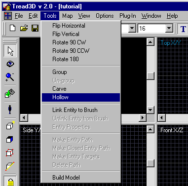
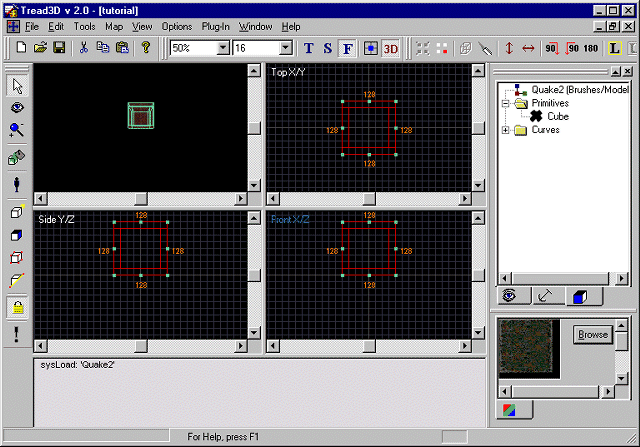

This is a walk-through as to how to hollow a brush. (Making a room)
Before starting this tutorial you should first get acquainted with the basics of the "Tread3D" editor; the screen and the various commands that are available.
As in the "MAKING A BRUSH" tutorial start "Tread3D" and make a very basic brush or as in the "SAVING YOUR WORK" tutorial just open your saved file called "tutorial".
Your screen should look like the one below.

Now click on the "Hollow" button.

A new window will now appear.
The "Hollow Depth" window should look like the one below.

Now just type in the thickness you want it to be; in our case lets use 16 units".
In addition to using the "Hollow" button you could have used the "Drop down menu".

You will notice that a positive value for the "Hollow Depth" is used; this will hollow a box to the inside of the brush that was made. (Outside dimensions of the hollowed brush are the outside dimensions of the unhollowed brush)
If a negative value for the "Hollow Depth" is used; this will hollow a box to the outside of the brush that was made. (Inside dimensions of the hollowed brush are the outside dimensions of the unhollowed brush)
Now click "Hollow".
Your screen should look like this if the "Hollow Depth" is positive.

Your screen should look like this if the "Hollow Depth" is negative.

Thats all there is to it.
What you have done is hollowed a brush or "Made a room".
Now resave your work.